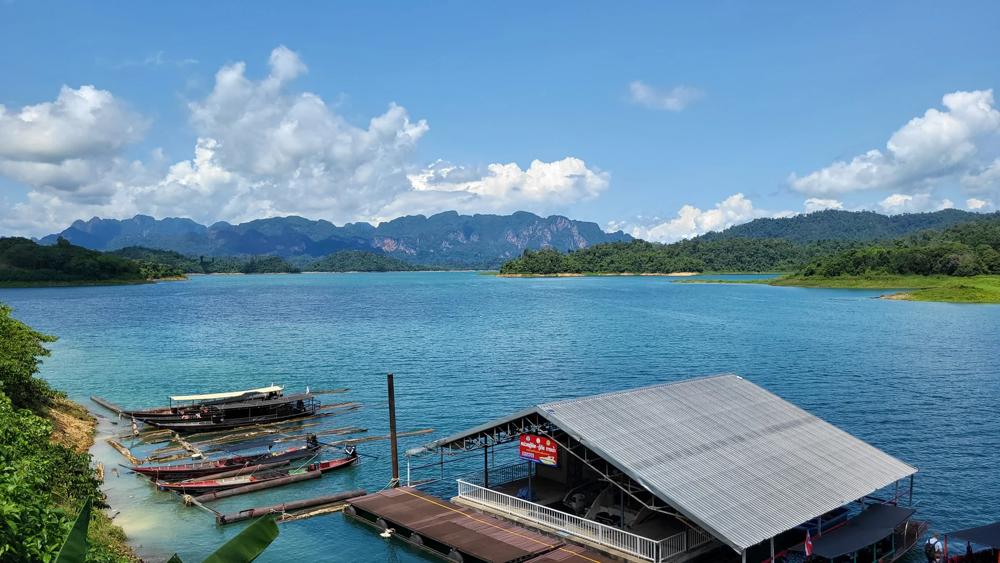
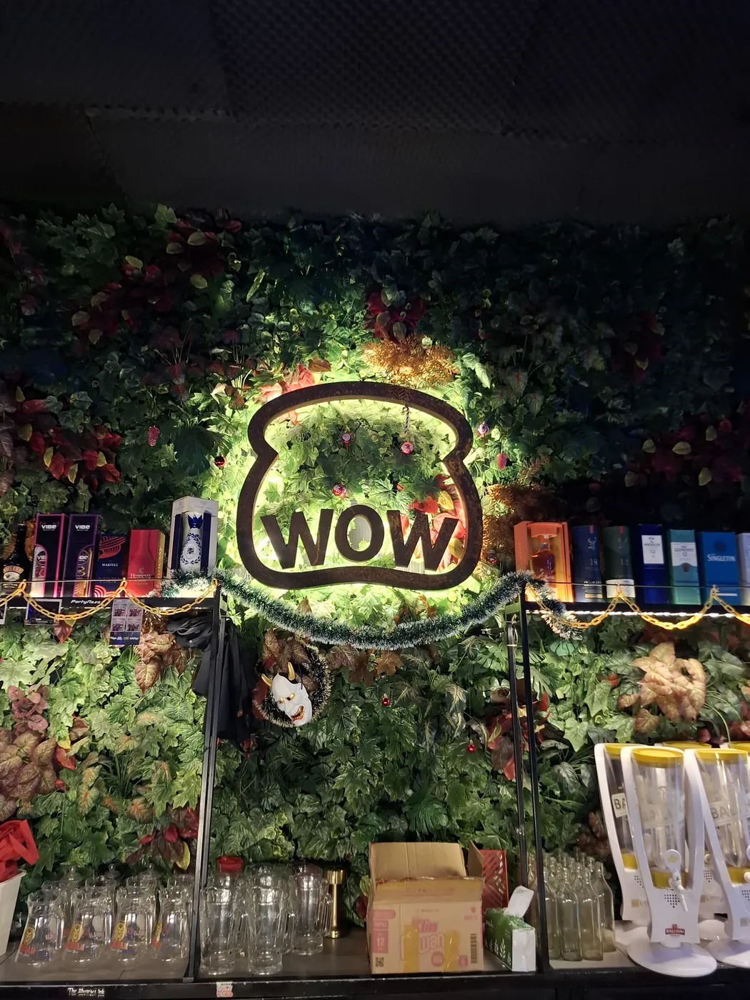
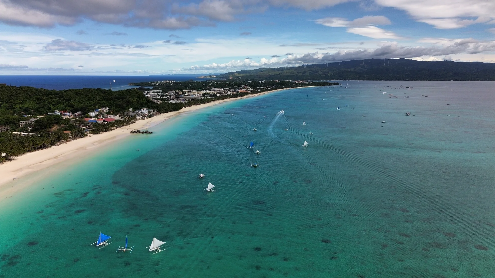

Room to breathe
Four days around Khao Sok showed me how good it can feel to be present without a constant signal or a packed schedule.
Read the Thailand story ↗Short moments from the journey: what happened, what stayed with me, and what is coming next. This is where future day and week updates will live without needing a full blog.
These are short notes from trips already on the site. New entries will be added here as new journeys happen.

Four days around Khao Sok showed me how good it can feel to be present without a constant signal or a packed schedule.
Read the Thailand story ↗
Warunk WOW was a coffee stop by day and a small club at night. The staff and regulars made it feel like a second home.
Read the Bali story ↗
The Philippines chapter is still growing. Whale sharks, scooters and island roads are only the first part of the story.
Open the preview ↗When a new trip begins, this page becomes the home for the small stories in between the bigger films and blogs.
Field Notes is for the next travel story, video or update. No daily spam and no public email list.